종자산업기사 (2018-08-19 기출문제)
1과목: 종자생산학 및 종자법규
1. 자가수정만 하는 작물로만 나열된 것은?
- 옥수수, 호밀
- 수박, 오이
- 호박, 무
- 완두, 강낭콩
(정답률: 74%)

2. 국가보증이나 자체보증을 받은 종자를 생사하려는 자는 종자관리사로부터 최종 단계별로 볓 회 이상 포장(圃場)검사를 받아야 하는가?
- 1회
- 2회
- 3회
- 4회
(정답률: 89%)
3. 정세포 단독으로 분열하여 배를 만드는 것에 해당하는 것으로만 나열된 것은?
- 밀감, 부추
- 달맞이 꽃, 진달래
- 파,국화
- 담배, 목화
(정답률: 65%)
4. 종자가 매우 미세하거나 표면이 매우 불균일 하여 손으로 다루거나 기계파종이 어려울 경우 종자 표면에 화학적으로 불활성의 고체 물질을 피복하여 종자를 크게 만드는 것은?
- 프라이밍코팅
- 필름코팅
- 종자펠릿
- 테이프종자
(정답률: 76%)
5. 수확적기의 작물별 종자의 수분함량에서 수분함량이 14%일 때 수확하며, 15% 이상이거나 13% 이하일 경우에는 기계적 손상을 입기 쉬운 것은?
- 옥수수
- 콩
- 아마
- 아리그라스
(정답률: 73%)
6. 다음 중 ( 가 )에 알맞은 내용은?
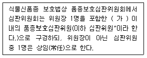
- 3명
- 5명
- 7명
- 8명
(정답률: 65%)
7. “1개의 꽃 안에 여러개의 자방이 있는 것으로 하나 하나의자방을 소과라고 하며 나무 딸기, 포도 등이 해당된다.”에 해당하는 용어는?
- 위과
- 복과
- 취과
- 단과
(정답률: 60%)
8. 교배에 앞서 제웅이 필요 없는 작물로만 나열된 것은?
- 벼, 보리
- 오이, 호박
- 귀리, 수수
- 토마토, 가지
(정답률: 74%)
9. 다음 중 장명종자로만 나열된 것은?
- 강낭콩, 상추
- 토마토, 가지
- 양파, 고추
- 당근, 옥수수
(정답률: 73%)
10. 식물학상의 과실을 이용할 때 과실이 나출된 것으로만 나열된 것은?
- 복숭아, 앵두
- 귀리, 자두
- 벼, 겉보리
- 밀, 옥수수
(정답률: 70%)
11. 식물신품종 보호법상 침해죄 등에서 품종보호권 또는 전용실시권을 침해한 자가 반는 것은?
- 3년 이하의 징역 또는 1억원 이하의 벌금
- 5년 이하의 징역 또는 1억원 이하의 벌금
- 7년 이하의 징역 또는 1억원 이하의 벌금
- 10년 이하의 징역 또는 1억원 이하의 벌금
(정답률: 58%)
12. "배유의 발달 중에 핵은 발달하여도 세포벽이 형성되지 않는 경우"에 해당하는 것은?
- 핵배유
- 다세포배유
- Helobial배유
- 다공질배유
(정답률: 71%)
13. 과수의 임목의 경우를 제외하고 품종보호권의 존속기간은 품종보호권이 설정등록된 날 부터 몇 년으로 하는가?
- 10년
- 15년
- 20년
- 25년
(정답률: 63%)
14. 종자산업법상 영업정지를 받고도 종자업 또는 육묘업을 계속 한 자의 벌칙은?
- 3개월 이하의 징역 또는 5백만원 이하의 벌금
- 6개월 이하의 징역 또는 5백만원 이하의 벌금
- 6개월 이하의 징역 또는 1천만원 이하의 벌금
- 1년 이하의 징역 또는 1천만원 이하의 벌금
(정답률: 64%)
15. "포원세포로부터 자성배우체가 되는 기원이 된다."에 해당하는 용어는?
- 주심
- 주피
- 주공
- 에피스테이스
(정답률: 69%)
16. 품종명칭등록 이의신청을 할 때에는 그 이유를 적은 품종명칭등록 이의신청서에 필요한 증거를 첨부하여 누구에게 제출하여야 하는가?
- 농림축산식품부장관
- 농업기술실용화재단장
- 농업기술센타장
- 농업기술원장
(정답률: 86%)
17. 육묘업 등록의 취소 등에서 육묘업 등록을 한 날부터 1년 이내에 사업을 시작하지 아니하거나 정당한 사유없이 1년 이상 계속하여 휴업한 경우에 받는 것은?
- 육묘업 등록이 취소되거나 1개월 이내의 기간을 정하여 영업의 전부 또는 일부의 정지
- 육묘업 등록이 취소되거나 3개월 이내의 기간을 정하여 영업의 전부 또는 일부의 정지
- 육묘업 등록이 취소되거나 6개월 이내의 기간을 정하여 영업의 전부 또는 일부의 정지
- 육묘업 등록이 취소되거나 12개월 이내의 기간을 정하여 영업의 전부 또는 일부의 정지
(정답률: 78%)
18. 다음 중 종자발아의 필요한 수준흡수량이 가장 많은 것은?
- 호밀
- 옥수수
- 벼
- 콩
(정답률: 70%)
19. 다음에서 설명하는 것은?
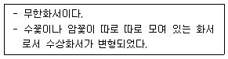
- 단정화서
- 단집산화서
- 복집산화서
- 유이화서
(정답률: 55%)
20. 후숙에 의한 휴면타파에 대한 내용이다. 다음에 해당하는 것은?
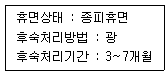
- 야생귀리
- 보리
- 벼
- 밀
(정답률: 75%)
2과목: 식물육종학
21. ( )에 알맞은 내용은?
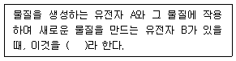
- 보족유전자
- 복수유전자
- 억제유전자
- 열성상위
(정답률: 45%)
22. 두 유전자의 연관이 상관일 때 두 유전자사이의 교차가 (cross over value)가 25% 라면 AB/ab에서 생기는 AB:Ab:aB:ab의배우자 비율은?
- 1:1:1:1
- 2:1:1:2
- 3:1:1:3
- 4:1:1:4
(정답률: 43%)
23. 다음 중 육종과정으로 가장 옳은 것은?
- 육종목표 설정 → 육종재료 및 육종방법 결정 → 변이작성 → 신품종 결정 및 등록 → 증식 및 보급
- 육종목표 설정 → 변이작성 → 육종재료 및 육종방법 결정 → 신품종 결정 및 등록 → 증식 및 보급
- 육종목표 설정 → 육종재료 및 육종방법 결정 → 변이작성 → 증식 및 보급 → 신품종 결정 및 등록
- 육종목표 설정 → 변이작성 → 신품종 결정 및 등록 → 육종재료 및 육종방법 결정 → 증식 및 보급
(정답률: 76%)
24. 분리육종법과 교잡육정법의 차이점으로 옳지 않은 것은?
- 분리육종에서는 재래종 집단을 대상으로 하고, 교잡육종에서 잡종집단을 대상으로 한다.
- 분리육종에서는 유전자재조합을 기대하는 것이고, 교잡육종에서는 유전자상호작용을 기개하는 것이다.
- 자식성식물에서는 두 방법 모두 동형 접합체를 선발한다.
- 자식성식물에서는 기존변이가 풍부할 때에는 교잡육종보다 분리육종이 더 효과적이다.
(정답률: 58%)
25. (가), (나)에 알맞은 내용은?
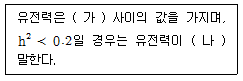
- 가 : 0~0.5, 나 : 높다고
- 가 : 0~0.5, 나 : 낮다고
- 가 : 0~1, 나 : 낮다고
- 가 : 0~1, 나 : 높다고
(정답률: 61%)
26. 변이의 생성 원인이 아닌 것은?
- 영양번식
- 환경
- 교잡
- 방사선
(정답률: 88%)
27. 매새대 모든 개체로부터 1립씩 채종하여 집단 재배하고, 후기세대에 계통재배하여 순계를 선발화는 육종방법은?
- 파생계통육종
- 1개체 1계통육종
- 순환선발육종
- 자연선택육종
(정답률: 84%)
28. 다음 중 내용이 틀린 것은?
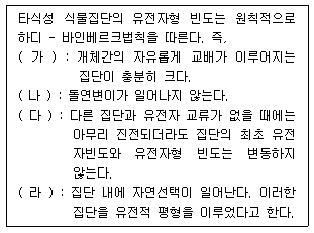
- (가)
- (나)
- (다)
- (라)
(정답률: 51%)
29. 다음 중 형질전환체 선발에 가장 이용되지 않는 것은?
- 병저항성
- 항생제저항성
- GUS효소
- 제초제저항성
(정답률: 38%)
30. 배추에서 자가불화합성을 타파하기 위한 뇌수분의 시행적시기는?
- 개화 바로 직전
- 개화 예정일의 오전 10시경
- 개화 후 1시간 이내
- 개화 전 5~7
(정답률: 65%)
31. 타식성 식물을 인위적으로 자식시키거나 근친교배하여 나온 식물체는 생육이 빈약하고 수량성이 떨어지는데 이러한 현상을 무엇이라 하는가?
- 우성
- 잡종강제
- 초우성
- 근교약세
(정답률: 89%)
32. 다음 중 잡종강세 육종의 일반적인 장점에 대한 설명으로 옳지 않은 것은?
- 생육이 왕성해진다.
- 우성인자의 이용이 용이하다.
- 열성인자의 이용이 용이하다.
- 불량환경에 대한 내성이 좋아진다.
(정답률: 68%)
33. 다음 중 계통육종법의 과정으로 가장 옳은 것은?
- 모본선정 → 교배 → F2 전개와 개체 선발 → 계통육성 → 생산력 검정 → 지역적응성 시험
- 모본선정 → 교배 → F2 전개와 개체 선발 → 계통육성 → 지역적응성 시험 → 생산력 검정
- 모본선정 → 교배 → F2 전개와 개체 선발 → 생산력 검정 → 통계육성 → 지역적응성 시험
- 모본선정 → 교배 → F2 전개와 개체 선발 → 지역적응성 시험 → 생산력 검정 → 계통육성
(정답률: 70%)
34. 바나나처럼 종자의 생성이 없이 열매를 맺는 경우를 무엇이라 하는가?
- 영양번식
- 재춘화현상
- 단위결과
- 웅성불임
(정답률: 86%)
35. 다음 중 동질 배수체에 대한 셜명으로 가장 적절하지 않은 것은?
- 공병세포가 커진다.
- 착화율이 감소한다.
- 화분립이 작아진다.
- 화기가 커진다.
(정답률: 58%)
36. 다음 중 반수체육종에 대한 설명으로 가장 적절하지 않은 것은?
- 육종연한을 단축한다.
- 선발효율이 높다.
- 양친간 유전자재조합의 기회는 F1이 배우자 형성을 할 때 한번 뿐이다.
- 환경적응성을 선발할 수 있다.
(정답률: 40%)
37. 세포질적 ∙유전자적 웅성불임성에 해당하는 것으로만 나열된 것은?
- 보리, 수수
- 수수, 토마토
- 양파, 사탕무
- 옥수수, 감자
(정답률: 54%)
38. AA게놈과 AACC게놈 간 교배한 F1이 감수분열할 때 예상되는 염색체 대합의 형태는?
- 3nI
- 2nI+nII
- nI+nII
- nI+2nII
(정답률: 52%)
39. 씨 없는 수박을 생상하기 위한 배수성 간 교배과정으로 옳은 것은?
- (4n×2n)×2n
- (3n×2n)×2n
- 2n×(4n×3n)
- 2n×3n
(정답률: 81%)
40. 마포믹시스에 대한설명으로 옳은 것은?
- 부정배형성은 배낭을 만든다.
- 무포자생식은 배낭을 만둘지만 배냥의 조직 세포가 배를 형성한다.
- 복사포자생식은 배낭모세포가 정상적으로 분열을 하여 배를 형성한다.
- 웅성단위생식은 정핵과 난핵이 융합하여 배를 형성한다.
(정답률: 68%)
3과목: 재배원론
41. ( )에 가장 알맞은 내용은?
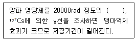
- 30P
- 40K
- 10N
- 60CO
(정답률: 72%)
42. 다음 중 작물의 중금속 내성 정도에서 니켈에 대한 내성이 가장 작은 것은?
- 보리
- 사탕무
- 밀
- 호밀
(정답률: 57%)
43. 다음 중 산성토양에 가장 강한 것은?
- 수박
- 유래
- 무
- 겨자
(정답률: 57%)
44. 다음 중 내습성에 가장 강한 것은?
- 파
- 감자
- 고구마
- 옥수수
(정답률: 67%)
45. 다음 중 작물의 종사 온도가 가장 낮은 것은?
- 감나무 맹아기
- 포도나무 맹아전엽기
- 배나무 유과기
- 복숭아나무 유과기
(정답률: 50%)
46. 다음 중 작물의 기원지가 중앙아시아 지역에 해당되는 것으로만 나열된 것은?
- 감자, 땅콩
- 귀리, 기장
- 담배, 토마토
- 고구마, 해바라기
(정답률: 73%)
47. 가을에 파종하여 그 다음해 초여름에 성숙하는 작물을 무엇이라 하는가?
- 월년생 작물
- 1년생 작물
- 다년생 작물
- 2년생 작물
(정답률: 71%)
48. 등고선에 따라 수로를 내고, 임의의 장소로부터 월류하도록 하는 방법은?
- 수반법
- 보더관개
- 암거법
- 일류관개
(정답률: 65%)
49. 다음 중 작물의 주요 온도에서 최고 온도가 가장 높은 것은?
- 호밀
- 옥수수
- 보리
- 귀리
(정답률: 67%)
50. 한해(旱害) 때 밭작물 재배 대책에 대한 설명으로 틀린 것은?
- 뿌림골을 낮게 한다.
- 뿌림골을 넓힌다.
- 칼리를 증시한다.
- 밀밭이 건조할 때에는 답압을 한다.
(정답률: 56%)
51. 다음 중 작물의 요수량이 가장 높은 것은?
- 감자
- 귀리
- 완두
- 보리
(정답률: 59%)
52. 다음 중 대기의 조성에서 함량비가 약 21%에 해당하는 것은?
- 먼지
- 이산화탄소
- 질소가스
- 산소가스
(정답률: 73%)
53. 탄산가스 시용효과에 대한 내용으로 (가), (나)에 알맞은 내용은?
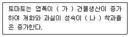
- 가 : 작아지고, 나 : 지연되고
- 가 : 작아지고, 나 : 촉진되고
- 가 : 커지고, 나 : 지연되고
- 가 : 커지고, 나 : 촉진되고
(정답률: 45%)
54. 다음 중 장과류에 해당하는 것으로만 나열된 것은?
- 포도, 무화과
- 감, 귤
- 배, 사과
- 밤, 호두
(정답률: 68%)
55. 다음 중 고립상태일 때 광포화점이 가장 낮은 것은?
- 옥수수
- 고구마
- 사과나무
- 콩
(정답률: 49%)
56. 다음 중 천연 옥신류에 해당하는 것은?
- 키네틴
- BA
- IPA
- PAA
(정답률: 51%)
57. ( )에 가장 알맞은 것은?
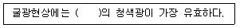
- 201~240nm
- 320~380nm
- 440~480nm
- 530~580nm
(정답률: 74%)
58. 다음에서 설명하는 것은?
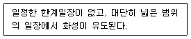
- 장일식물
- 단일식물
- 정일성식물
- 중성식물
(정답률: 69%)
59. ( )에 알맞은 내용은?
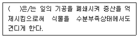
- 지베렐린
- ABA
- 옥신
- 에틸렌
(정답률: 70%)
60. 다음 중 미량원소에 해당하는 것은?
- N
- P
- Cu
- Ca
(정답률: 83%)
4과목: 식물보호학
61. 곤충의 기관계에 대한 설명으로 옳지 않은 것은?
- 기문, 기관, 모세기관으로 이루어져 있다.
- 파리목에서는 기문이 하나도 없는 경우도 있다.
- 곤충이 탈피하여도 모세기관의 표피는 그대로 남는다.
- 기문은 몸의 양 옆에 최대 8쌍이 있지만 이보다 적은 경우도 많다.
(정답률: 47%)
62. 농약 살포방법으로 옳지 않은 것은?
- 살포 전과 후에 살포기를 반드시 씻어야 한다.
- 쓰고 남은 농약은 다른 용기에 옮겨 보관하지 않는다.
- 살포작업은 한 사람이 2시간 이상을 계속해서 작업하지 않는다.
- 살포작업은 약제의 효능을 위해 날씨가 좋은 한낮에 살포하는 것이 좋다.
(정답률: 82%)
63. 생물학적 식물병 진단 방법이 아닌 것은?
- 혈청학적 진단
- 지표식물에 의한 진단
- 즙액 접종에 의한 진단
- 충체 내 주사법에 의한 진단
(정답률: 60%)
64. 600kg의 수확물에 살충제 50% 유제를 8ppm이 되도록 처리할 때 필요한 양은? (단, 비중은 1.07)
- 약 0.09mL
- 약 0.9mL
- 약 9mL
- 약 90mL
(정답률: 53%)
65. 해충 방제에 있어서 생물적 방제의 장점은?
- 비용이 저렴하다.
- 방제 효과가 빠르다.
- 천적 생물의 유지가 용이하다.
- 해충이 농약에 대한 내성이 생길 염려가 없다.
(정답률: 76%)
66. Streptomyces scabies 이라는 균에 해당하는 것은?
- 혐기성 그램양성세균
- 호기성 그램양성세균
- 혐기성 그램음성세균
- 호기성 그램음성세균
(정답률: 61%)
67. 월년생 광엽잡초에 해당하는 것은?
- 깨풀
- 망초
- 명아주
- 밭뚝외풀
(정답률: 53%)
68. 제초제에 의해서 나타나는 작물의 약해 증상이 아닌 것은?
- 잎의 황화와 비틀림
- 잎의 큐티클층 비대
- 잎의 백화현상과 괴사
- 잎과 줄기의 생장 억제
(정답률: 77%)
69. 작물과 잡초가 경함하는 대상이 아닌 것은?
- 광
- 수분
- 양분
- 파이토알렉신
(정답률: 79%)
70. 기주식물의 즙액을 빨아먹으면서 바이러스를 매개하는 해충은?
- 애멸구
- 벼잎벌레
- 흑명나방
- 이화명나방
(정답률: 74%)
71. 식물벼의 제 1차 전염원으로 가장 거리가 먼 것은?
- 꽃
- 종자
- 괴경
- 구근
(정답률: 69%)
72. 잡초의 생육 특성에 대한 설명으로 옳은 것은?
- 종자 이외로도 번식이 가능하다.
- 휴면성이 없어 농경지의 점유 밀도가 높다.
- 대부분 C3 식물로써 초기 생장속도가 빠르다.
- 잡초의 밀도가 낮아지면 개화 및 결실률이 낮아져 종자 생산량이 줄어든다.
(정답률: 64%)
73. 여름철 밭작물 재배 시 발생하는 잡초에 해당하는 것은?
- 벗풀
- 바랭이
- 쇠털골
- 나도겨풀
(정답률: 65%)
74. 잡초의 생태적 방제 방법에 대한 설명으로 옳지 않은 것은?
- 재배적 방제 방법과 같은 의미이다.
- 경합 특성을 이용한 작부체계 수립에 활용할 수 있다.
- 작물의 재식밀도 증가는 선점현상 측면에서 바람직하지 않다.
- 육묘 이식재배는 작물의 우생적 출발현상을 이용하는 것이다.
(정답률: 63%)
75. 거미와 비교한 곤충의 특징으로 옳지 않은 것은?
- 생식기는 배에 존재한다.
- 날개는 가운데 가슴과 뒷가슴에 위치한다.
- 더듬이의 형태는 같은 종인 경우 암수에 관계없이 모두 동일 한다.
- 3쌍의 다리를 지니며, 각 다리는 기본적으로 5개의 마디로 되어 있다.
(정답률: 66%)
76. 해충이 살충제에 대하여 저항성을 갖게 되는 기작이 아닌 것은?
- 더듬이의 변형
- 표피층 구성의 변화
- 피부 및 체내 지질의 함량 증가
- 살충제에 대한 체내 작용점의 감수성 저하
(정답률: 70%)
77. 종합적 장제 방법에 대한 설명으로 옳은 것은?
- 한 지역에서 동시에 방제하는 것이다.
- 여러 방제 장법을 조합하여 적용하는 것이다.
- 항공 농약 살포 등 대규모로 방제하는 것이다.
- 한 가지 방제 방법을 집중적으로 계속하여 적용하는 것이다.
(정답률: 87%)
78. 유기인계 농약에 해당하는 것은?
- 카벤다짐 수화제
- 벤퓨라카브 입제
- 페노뷰카브 유제
- 페니트로티온 유제
(정답률: 52%)
79. 우리나라 씨감자 생산은 대관령과 같은 고랭지에서 생산하게 되는데, 이는 씨감자를 주로 어떤 병원으로부터 보호하기 위해서 인가?
- 세균
- 곰팡이
- 바이러스
- 파이토플라스마
(정답률: 76%)
80. 대추나무 빗자루병 방제를 위해 가장 적합한 것은?
- 페니실린
- 가나마이신
- 테트라싸이클린
- 스트렙토마이신
(정답률: 56%)